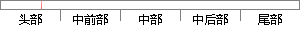

Python是纯粹的自由软件， 源代码和解释器CPython遵循 GPL协议。
片段位置图

相似结果|
相似片段 1：Python语言来实现。Python语言是一门具有面向对象特性且用途极为广泛的用途的程序设计语言，作者是GuidovanRossum。Python是纯粹的自由软件，源代码和解释器CPython遵循GPL
相似片段 2：Python是一种面向解释型的计算机程序编译语言，Python是一款纯粹的自由软件，其编辑器CPython和源代码遵循GPL(GNUGeneralPublicLicense)协议。
相似片段 3：，第一个公开发行版发行于 1991年[20]。Python最大的优势是它是纯粹的自由软件[21]，源代码和解释器都遵循 GPL（GNU General Public License)协议。Python
相似片段 4： 90 年代初设计，1991 年公开发行第一版，目前最新版本为 Python3.5。 Python 是一款自由软件，其源代码和 CPython 解释器都遵循 GPL 协议，Python 是一种完全面向对象
相似片段 5：，也有解释型语言的方便。GuidovanRossum于1989年在荷兰发明了Python，在91年发布了公开版本。像其他一些开源语言和软件一样，Python的源代码和解释器CPython遵循GPL
|
※ 片段修改建议 ※
近似词参考：- 纯粹：纯洁 纯正
- 和解：息争
- 解释：诠释 注释 表明
- 遵循：遵守 遵照
- 协议：和谈 协定
系统自动生成语句：Python是纯洁的自由软件， 源代码息争释器CPython遵守 GPL和谈。
注：本片段修改建议为系统自动生成，仅供参考。